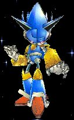
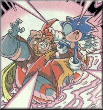
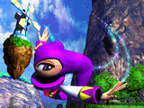
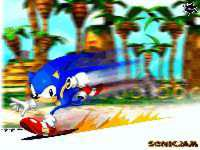
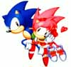
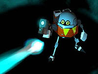

Previews And Reviews!!!
Previews And Reviews!!!
Can't wait to see what will be in the next issue! What did so and so have to say about it? What will the fans be expecting and what will be on their lips for many times to come! Come to the Previews And Reviews section for upcoming tidbits on the events in the Sonic, Knuckles, And Nights world!!! What comes out next month, What is in store for the future, and links to the reviews by Dan Drazen!!!
The Sonic And Knuckles F.A.Q. File !!!
Written in text format, this is a compliation of two faq files - Dan Drazen's And James Firmiss! Have any questions about the comics or why did this happen when something else was supposed to? Then this FAQ lists the answers to some of the most Frequently Asked Questions on the minds of Sonic fans!
 Sonic The Hedgehog: Issues 1-46
Ever wonder what the ORIGINAL concept for Sonic The Hedgehog was about? How did the storylines start? When did Ken Penders begin writing? Who drew what issue and what issue did this happen in? Well here you can find what was in the first 46 issues of Sonic The Hedgehog!! In a convenient table format you can find basic info including The Writers, Artists, First Appearances, and a brief summary (without end spoilers) of what happened in what book!!! Compiled by Jonathan Gray
 Sonic The Hedgehog: Issues 47-100
You've seen the past but what about the present? Starting at Battle Royal And Mammoth Mogul and going into Endgame and The Death Of Dr. Robotnik to Tales Of The Freedom Fighters and beyond, this section covers issues 47-100! Seriuos changes have come over the Sonic comic at this point! And this section does the same as its counterpart - Covering info on writers, artists, First Appearances, and a brief summary (without end spoilers) of what happened in what book in a convenient table format!!! Compiled by Jonathan Gray
Knuckles The Echidna: Issues 1 - 50
Meet the Guardian Of the Floating Island! This section is formatted the same as the above Sonic sections - Covering the beginning issues of Knuckles The Echidna! This section is also the ONLY place on the Internet to find the completed pictures of Patrick Spaziante's triple image covers! Covering info on writers, artists, First Appearances, and a brief summary (without end spoilers) of what happened in what book in a convenient table format!
 Nights Into Dreams: 1 - 50
One of the ONLY places on the WWW to find info on the Nights Into Dreams comic book! Come see Elliot, Claris, Nights, Snuze, Wizeman, and Reala in the section with the same design as above! Located in a convenient table format you can find info covering writers, artists, First Appearances, and a brief summary (without end spoilers) of what happened in what book!
Miniseries And The Super Specials
While the other links follow the storylines of thier respective characters, what if you just want to see what was in what special and miniseries? Well come here to find all of the specials and Miniseries' in the same format style as above - a convenient table format in which you can find info covering writers, artists, First Appearances, and a brief summary (without end spoilers) of what happened in what book! Compiled by Mammoth Mogul
The Fleetway Universe !!!
The Fleetway Comics! One of the most elusive comics to Sonic fans here you can find info on the Fleetway Universe as well as what I hope to be a working storylist for Sonic The Comic! All info here is courtesy of Sonic Fans, Alessandro Sanasi and Psycho!
 Writers And Artists Info
Who writes and draws the comics you read? Come here to find background info on all of the artsts and writers of The Archie Universe from Ken Penders and Patrick Spaziante to Sam Maxwell And Mike Gallagher. Located here is their debut, best story, information, and examples of the artists artwork!!
 The First Sonic Comic Online!!!!
This ain't the Archie comic but here, taken directly from the Sonic Archive is the ORIGINAL 7 page Sonic The Hedgehog comic from Disney Adventures! Written And Drawn by Francis Mao this is the American comic that set the basis for the ENTIRE Fleetway Universe!!!
 Sonic Grams
Set up and designed like the Sonic Comics Letters Page this section houses that stuff thats out of the ordinary and find links to that "special" Sonic stuff that doesn't normally fit on the other pages! Take a gander her! You may find some surprises!!!
Sonic The Hedgehog, Nights and related characters are trademarks of Service and Games Enterprise, Archie Comics, and DIC Productions. This page was made without permission. All handdrawn art here was drawn by the various Sega officials and Archie artists and remastered by Jonathan Gray using Adobe PhotoShop and Paint Shop Pro. No Art Here may be used without written aproval by The Artist. The Version of "Gravity Man - Mega Man 5" In midi format for backround music was created by Created by Maelgrim and is copyright Capcom Japan. Page design �1997-1998.